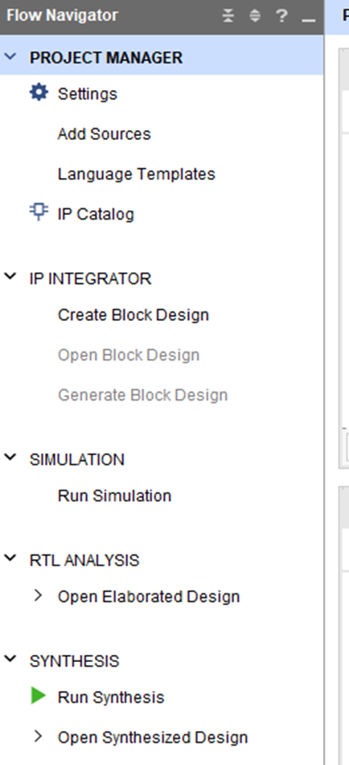
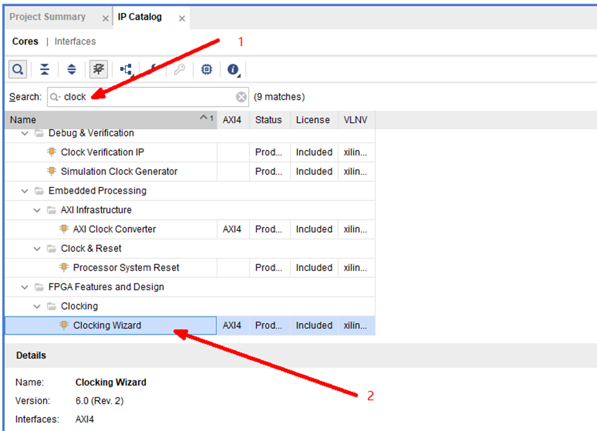
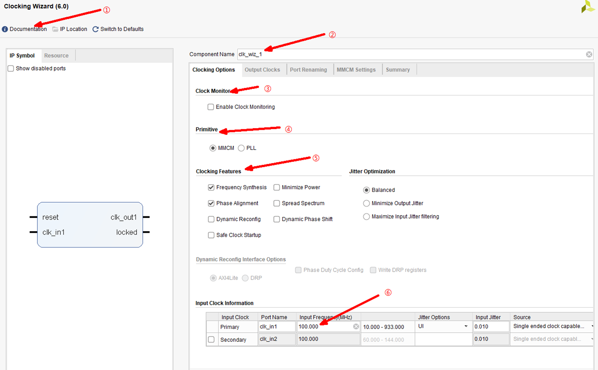
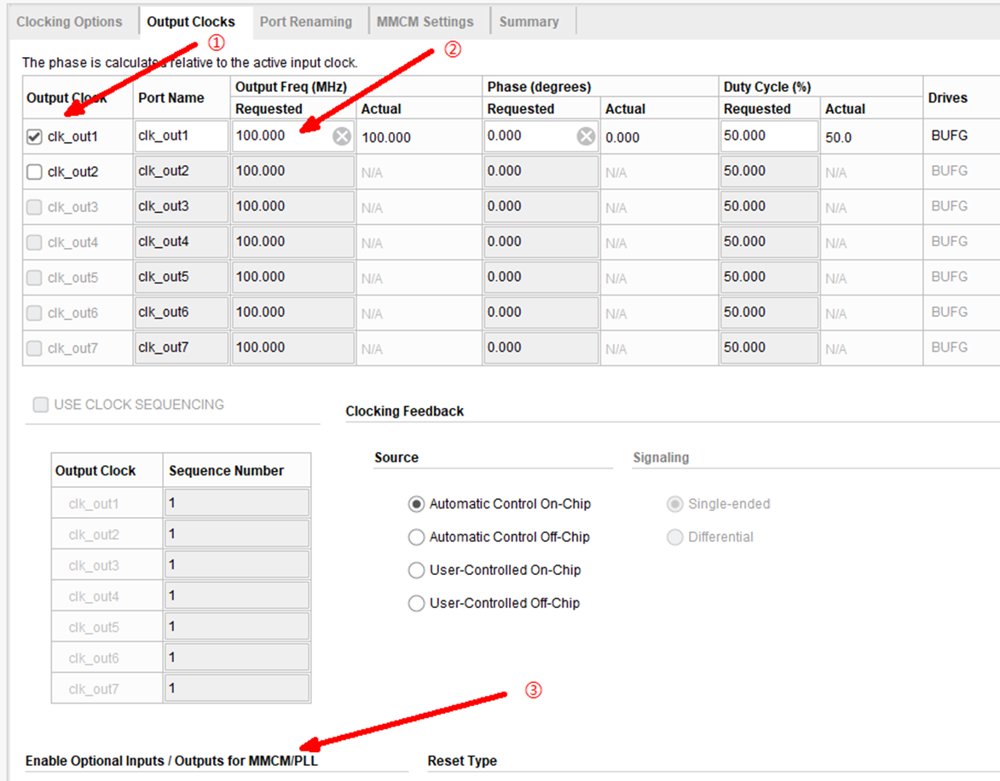
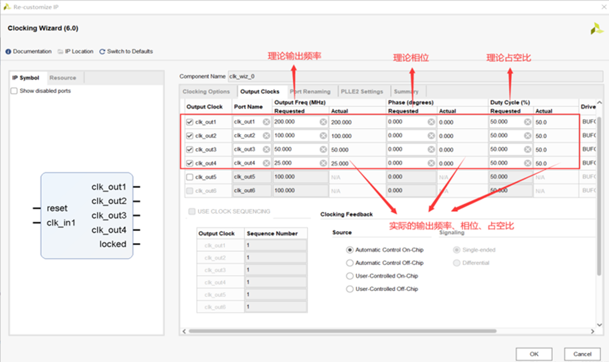
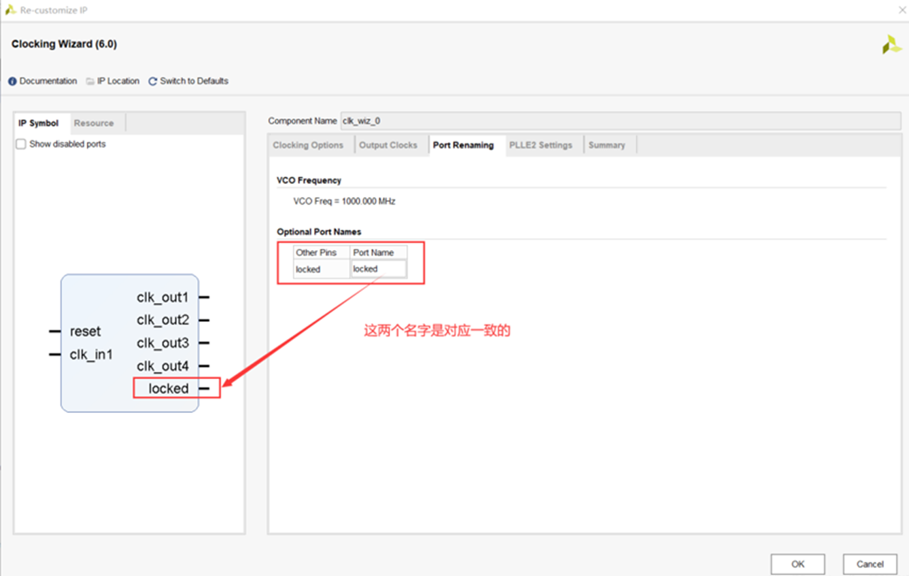
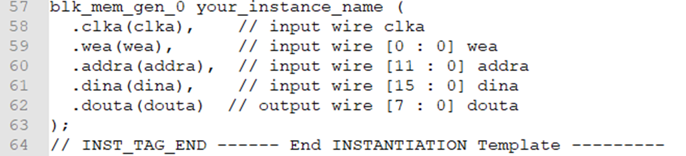
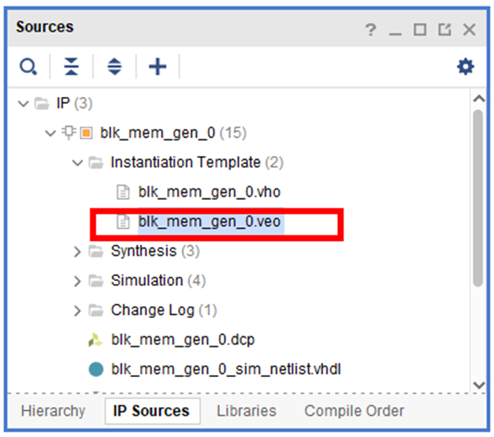

锁相环IP核调用
锁相环(PLL)模块是参数化模块库中一个非常有用的基本元件，其功能主要是时钟倍频、分频、相位偏移和可编程占空比。
| 在工程界面的左侧点击IP Catalog，所有的IP核调用时都是在IP Catalog选项搜索，点击IP Catalog选项在软件右侧会出现IP Catalog的搜索框，可以搜索到想要的IP核的名称。 |
 |
| 在搜索框中输入clock，底下会出现很多IP的选项，找到Clocking Wizard,这个就是下面需要被调用的锁相环IP核，双击Clocking Wizard，等待软件会自动弹出锁相环的各个参数设置界面。 |
 |
|
①：IP核官方的手册文档可以在这里下载查看，官方文档一般都是最全面的技术文档。 ②：IP核的命名名称，输入自己给IP核定义的名称，后面在代码中调用的就是这个给名字 ③④⑤：这三个选项默认不用修改。 ⑥：输入外部给锁相环输入的外部时钟频率。 |
 |
|
①：选中输出时钟的选项，可以选择输出一路时钟或者两路频率不一样的时钟或者三路时钟。 ②：设置输出时钟的频率，可以输出100MHZ，50MHZ，时钟频率可以自己设置频率大小 ③：设置输入复位信号，复位信号可以设置高复位或者低复位有效，设置输出locked信号，当locked信号拉高时代表锁相环可以稳定的输出时钟信号，达到稳定状态。 |
 |
设置输出频率和理论频率和相位还有占空比，锁相环会显示实际输出的频率，相位和占空比,在输入时钟和输出时钟两个差距比较大时会显示出差异。 
| 设置locked信号的名字，此选项一般选择默认不修改，Locked信号是用来观察pll输出时钟是否和输入时钟锁定。当锁定时，这个Locked信号就变为高电平。锁相环此时输出的时钟进入稳定状态。 |
 |
勾选lock
在新建 PLL（锁相环）IP 核时，lock 信号勾选很重要，核心原因是：它是“时钟是否稳定可用”的官方指示。
lock 的本质
lock=1 表示 PLL 输出频率和相位已经进入稳定锁定状态。lock=0 时，输出时钟可能还在漂、抖动大、频率不准，逻辑在这个阶段启动很容易出错。很多人只连了 clk_out，没用 lock 去控制系统复位/使能，结果上电偶发异常。
和“烤机（长时间压力测试）”的关系
烤机时温度、电压、负载都在变化，PLL 更容易出现边界状态：
- 上电/重启瞬间锁定变慢
- 温漂导致短暂失锁再重锁
- 某些板卡在高温下锁定时间显著变长
如果没有用lock做保护，烤机时就可能出现“平时没事，跑久了偶发死机/数据错乱/通信异常”的玄学问题。
实例化方式
RAM IP实例化调用
|
在IP Sources界面找到blk_mem_gen.veo文件，文件中是IP的例化模板。我们只需要将文件中内容复制粘贴到我们verilog程序中,对IP进行实例化。
 |
 |